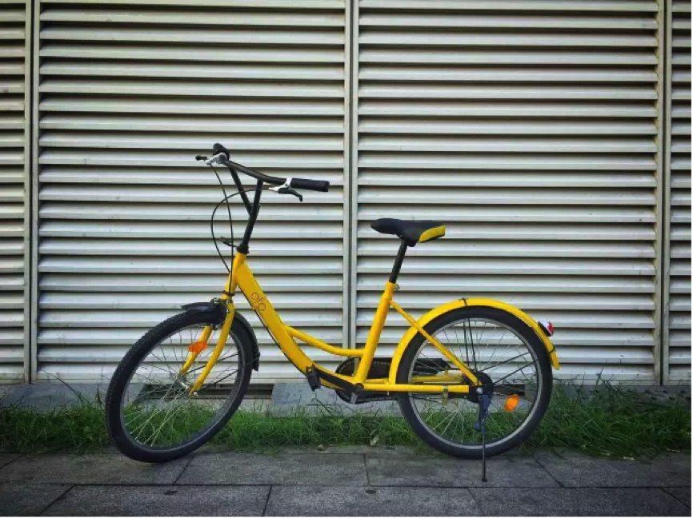

2016/ 10/ 10
ofo共享单车完成1.3亿美元C轮融资
2016年10月10日，ofo共享单车宣布完成1.3亿美元C轮融资，包括两周前滴滴出行数千万美元的C1轮战略投资。C2轮投资方均来自国内外顶级投资机构：参与了滴滴出行最新一轮融资的美国对冲基金Coatue，两年投资55 家公司并缔造4家独角兽的小米，以及曾投资滴滴出行、饿了么的中信产业基金为本轮投资领投方，元璟资本、著名风险投资家Yuri Milner以及ofo的早期投资方经纬中国、金沙江创投等早期投资机构继续跟投。
在未来，ofo将与小米展开战略合作。早前滴滴出行方面表示，滴滴出行与ofo将进一步为人们“城市出行共享”展开战略合作，用户在滴滴平台上有望直接体验到ofo的服务。“流量+硬件”的战略布局，将会极大提升ofo共享单车在城市出行服务的竞争力。
ofo共享单车是全球第一个无桩共享单车出行解决方案，首创“共享单车”模式。用户通过微信服务号或移动App输入车牌号即可获得密码解锁单车，随取随用，随时随地。用户也可以共享自己的单车给 ofo 经营，从而获得所有 ofo 共享单车的免费使用权，以1换N。
ofo共享单车上线13个月，覆盖200个校园，拥有180万用户，每日提供超过50万次出行服务。上线的一年时间里，ofo共完成了5轮融资。从高频的融资节奏以及商业布局来看，ofo长远战略的部署意识以及踏实干劲，让北大学生创业背景的ofo成为当下最有潜力的创业公司。